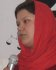

|
|
در میان این همه هیاهو/ برای عالیه اقدام دوست و 22 خردادی که فراموش نمی شود
دلارام علی
جمعه22 خرداد 1388

22خرداد 1385 (روز همبستگی زنان ایران )
عقربه ها یه ساعت 5 عصر نزدیک شد ، میدان هفت تیر خبر از فاجعه ای می داد که آرام در بسترش خفته بود.ماشین های پلیس یکی پس از دیگری اطراف میدان را محاصره کردند.عقربه ها میخکوب شدند ، باتوم ها بالا رفت ، اسپری های فلفل فضا را برای نفس کشیدن تنگ کرد ، صدای فریاد از گوشه و کنار میدان به گوش می رسید ، جمعیت بیشتر و بیشتر می شد ، ضربات باتوم ها شدت می گرفت،..........
و بعد دستبندها از جیب ها بیرون آمد ، ماشین های پلیس پر شدند، مردم پراکنده شدند و هفتاد زن و مرد که برای تغییر قوانین تبعیض امیز به میدان آمده بودند به زندان اوین منتقل شدند.
عقربه ها به ساعت 6 نرسیده میدان به خواب قدیمی اش باز گشت و گرد سکوت میدان هفت تیر را پوشاند.
از آنروز تا کنون :
با گذشت کمتر از 3 ماه از تجمع مسالمت آمیز میدان هفت تیر برای تغیر قوانین مدنی تبعیض آمیز کمپین یک ملیون امضا در 5 شهریور ماه 1385 آغاز به کار کرد و در همان روز ابتدا از برگزاری مراسم معرفی این کارزار جلوگیری شد.
کمتر از 6 ماه از فعالیت این کارزار نگذشته بود که در روز 13 اسفند ماه 1385 و در روز دادگاه 5 نفر از متهمان پرونده 22 خرداد 33 نفر از فعالان جنبش زنان در مقابل دادگاه انقلاب دستگیر شدند .
پس از آن احضار و دستگیری های اعضای کمپین یک ملیون امضا آغاز شد و در نزدیک به 3 سال گذشته 60 نفر راهی زندان شدند، بسیاری احضار و بازجویی شدند ، خانه های بسیاری تفتیش شد ، وثیقه های ستگینی برای دستگیر شدگان صادر شد ، خانواده های بسیاری راه دادگاه انقلاب را در جستجوی فرزندانشان پیمودند و سرانجام کمتر از 6 ماه قبل حکم 3 سال حبس برای عالیه اقدام دوست یکی از شرکت کنندگان تجمع 22 خرداد صادر شد.
22 خرداد 1388 (روز انتخابات ریاست جمهوری ایران)
3 سال گذشته است و این روزها شهر حال و هوایی دیگر دارد.خیابان ها تا نیمه های شب پذیرای هوادارانی هستند که برای حمایت از نامزد مورد علاقه خود از بالا تا پایین شهر را در می نوردند ، صدای شعار از تمام ماشین ها شنیده می شود ، همه با هم بحث می کنند و در میادین اصلی شهر میتینگ های حمایتی برگزار می شود .تا چند روز دیگر قرار است انتخابات ریاست جمهوری در ایران برگزار شود و این برای بسیاری شوری جدید آفریده است.
برای من اما .......
برای من اما این روزها رنگ دیگریست. این روزها از میدان هفت تیر که می گذرم قلبم تند تر می زند ، گوشه گوشه میدان را با نگاهم می کاوم ، آسفات های خیابان انگار داستان از حکایتی کهنه می گویند که شاید این روزها تنها در خاطر تعداد اندکی مانده است. به جای تابلوی سلام که وعده آن روز ما بود این روزها پوستر های انتخاباتی نشسته است و به جای سرود ای زن ای حضور زندگی شعار های انتخاباتی در میدان طنین افکنده است.
این روزها برای من از جنس دیگریست و پر از فکر هایی که مدام ذهنم را می خورد. در میان این همه هیاهو این روزها فکر من مدام پیش کسانیست که در این سال ها از پای ننشستند ، کتک خوردند ، زندانی شدند ، ناسزا شنیدند ، خانه هایشان تفتیش شد و بسیاری شان اکنون پشت میله های محبسند و بیش از همه شاید فکر زنی که در روزی شیبه همین روزها در میدانی شبیه همین میدان ها آزادیش را ربودند و این روزها لابد باید پشت میله های محبس مناظره های انتخاباتی را تماشا کند.
این روزها در میان این همه هیاهو فکر عالیه بیش از همیشه با من است و ترس اینکه مبادا فراموش کنیم جای بسیاری امروز در کنارمان خالیست